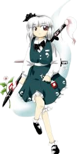

Youmu é frequentemente vista como:
Séria e disciplinada – ela leva seus deveres muito a sério e tenta sempre agir corretamente.⚔️ Espírito de guerreira
Youmu vive pelo caminho da espada:
Treina constantemente suas habilidades
Busca aperfeiçoar sua técnica
Valoriza honra e disciplina
Ela encara batalhas como parte natural de seu crescimento.
😅 Insegurança e crescimento
Apesar de sua aparência confiante, Youmu ainda é inexperiente:
Fica nervosa com facilidade
Dúvida de suas próprias decisões
Se esforça para agir como uma verdadeira jardineira e guarda
Isso mostra seu lado humano e em evolução.
🌿 Natureza bondosa
Youmu possui um coração gentil:
Respeita vivos e mortos igualmente
Deseja proteger aqueles ao seu redor
Age com senso de dever e justiça
Ela prefere evitar conflitos desnecessários.
👻 Relação com os outros
Suas relações são baseadas em respeito:
Serve fielmente Yuyuko Saigyouji
Tem amizade e respeito por outros habitantes de Gensokyo
Pode ser um pouco tímida em interações sociais
Mesmo assim, ela busca sempre agir com educação.
Jardineira de Hakugyokurou
Youmu é responsável por cuidar dos jardins do mundo dos mortos, mantendo a beleza e a ordem do local.
Guarda de Yuyuko
Além de jardineira, ela atua como guarda e protetora de Yuyuko, defendendo Hakugyokurou de qualquer ameaça.
Esgrima sobrenatural
Youmu é uma espadachim extremamente habilidosa:
Usa duas espadas lendárias (Roukan e Hakurouken)
Corta não apenas matéria, mas também conceitos e espíritos
Possui técnica e velocidade excepcionais
Combina golpes físicos com energia espiritual
Natureza meio-humana meio-fantasma
Youmu é um ser metade humana e metade fantasma:
Possui um corpo físico e uma metade espiritual flutuante
Tem grande afinidade com o mundo dos mortos
Consegue interagir com espíritos com facilidade
Velocidade e agilidade
Ela é extremamente rápida em combate, conseguindo desferir vários golpes em sequência antes que o inimigo reaja.
Voo
Como outros habitantes de Gensokyo, Youmu pode voar livremente, participando de batalhas aéreas.
Sua combinação de técnica, disciplina e natureza espiritual faz dela uma das guerreiras mais habilidosas de Gensokyo.

Espécie: Humano meio Fantasma
Título: Jardineira Fantasma (Ghostly Gardener)